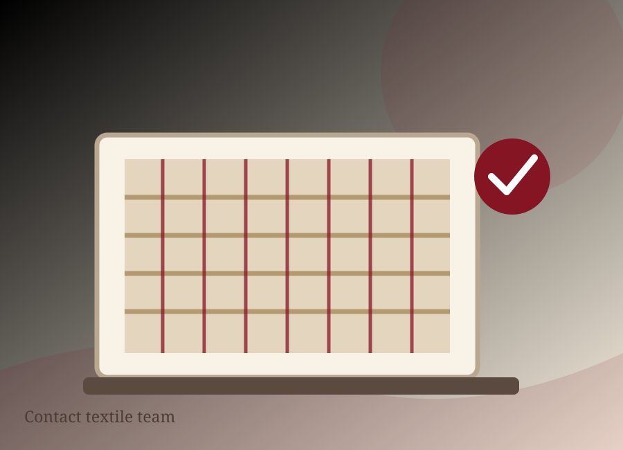

CONTACT OUR TEAMLet's talk
Let's talk
textiles.
Share a few details about your product enquiry, partnership idea or manufacturing requirements.

FIND US
Based in Faisalabad.
Faisalabad, Punjab, Pakistan
For the most accurate phone number, email address and postal details, please use the contact information published by the company in its official materials. Those details should be verified before launch.
Find official contact details ↗